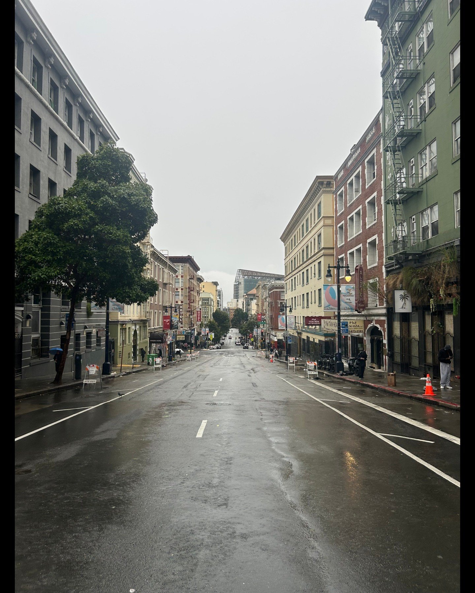

Contact us · 357 Ellis Street
Come by. Say hello.
Whether you want to serve, bring a team, join a school or just ask a question, we’d love to hear from you.
Find us
In the heart of the Tenderloin.
Visit357 Ellis Street
San Francisco, CA 94102
San Francisco, CA 94102
Call415-885-6543
Volunteeringvolunteer@ywamsanfrancisco.org
Teams & outreachoutreach@ywamsanfrancisco.org
DTS (5 Month Course)dts@ywamsanfrancisco.org
Ellis RoomMon · Tue · Wed · Fri, 10:30 am–4:30 pm
Food pantryThursdays, 1–4 pm
Pop-Up ChurchSundays, 7:30–9 am
Send a message
How can we help?
Tell us a little about yourself and what you’re hoping for. We usually reply within a few days.
Looking for food help? Pantry sign-ups happen on site at 357 Ellis Street, Thursdays at 3:30 pm. For food right away, visit the SF-Marin Food Bank or call 211.
Ready to jump in?
Pick a volunteer shift, plan a team trip, or apply for our next DTS.